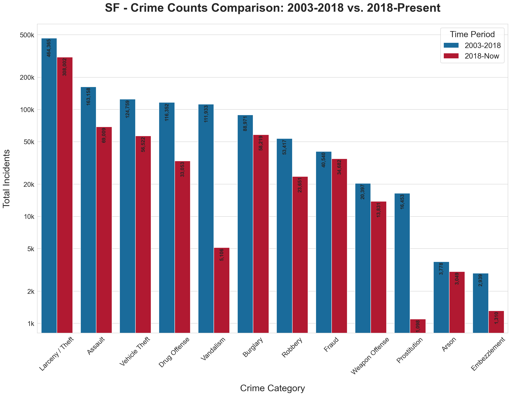

What is the most frequent crime in San Francisco?
Larceny and theft make up the vast majority of crimes in San Francisco. While that might not be surprising, the sheer volume is striking. It must be noted that in the police data, "Larceny/Theft" is a broad umbrella that covers everything from shoplifting and pickpocketing to bicycle theft and car break-ins, which could explain such a high value of crime incidents.

Figure 1: Total crime incidents in San Francisco by category. We compared the historical 2003-2018 period to the 2018-Present data. Larceny/Theft is by far the most common offense, significantly outpacing Assault, the second most frequent crime in the dataset. (Note that the data is shown on a vertical logarithmic scale, and also note that the 2018-Present period covers approximately half of the years of the historical period)
According to Pew Research, Larceny/Theft is the most common crime in the US. How is it distributed across the different districts, and how did it change over time?
The map below uses a relative ratio describing how heavily the crimes are present compared to the overall city average. This shows how concentrated Larceny/Theft is in a specific district compared to San Francisco as a whole. It is to be noticed that the Central district is always above the average, which can be due to the district's geography, as it includes major tourist spots like Fisherman's Wharf and Chinatown, where crowded streets and parked rental cars create plenty of opportunities for pickpockets and car break-ins.
Figure 2: The relative concentration of Larceny/Theft across San Francisco's police districts. An index of 1.0 (white) means the district's theft rate perfectly matches the citywide average. Areas in red (>1.0) indicate that theft makes up a disproportionately large share of the local crime profile, revealing that districts like Central are persistent hotspots regardless of the year.
Starting in 2015, the data shows a noticeable bump in thefts in the Richmond district, a mostly affluent residential area. The timing of this spike points to California's Proposition 47. Passed in late 2014, the law downgraded non-violent thefts under $950 from felonies to misdemeanors. Research from the Public Policy Institute of California links this policy shift to a statewide jump in car break-ins. Since the Richmond sits right next to tourist hotspots like Golden Gate Park and Lands End, it makes sense that the neighborhood caught the spillover of these opportunistic thefts.
In this last visualization, we can see a heatmap showing the average amount of crime activity during the day on a weekly basis for each district. By looking at the different districts, we can see that a substantial amount of thefts occur on Friday evening. This suggests that thieves may actively target areas during high-traffic weekend and nightlife hours.
However, there are some hidden factors that also influence the time of day a crime occurs. As highlighted in an analysis of theft patterns by Latham's Security Doors, the time of day a crime occurs depends entirely on the target. Their research notes that residential burglaries and thefts actually peak during the day when homeowners are away at work, whereas commercial thefts and vehicle break-ins happen more often during the nighttime hours.
This idea is also supported by the underlying structure of the SF Police Department datasets that have been analysed so far: as stated earlier, the "Larceny/Theft" category is a broad umbrella that encompasses a wide variety of offenses, including both residential burglaries and thefts (that happen more often during the day) and commercial thefts and vehicle break-ins (that happen more often during the night).
Figure 3: Average weekly Larceny/Theft incidents for each hour and day of the week. While exact volumes vary by neighborhood, exploring the districts inevitably reveals a clear behavioral pattern: thefts consistently peak on Friday evenings.
This analysis is based on over 20 years of public incident reports from the San Francisco Police Department, spanning from 2003 to the present. The data captures the time, location, and category of hundreds of thousands of crimes.
While police records only represent reported incidents rather than every crime that occurs, tracking two decades of data reveals clear geographic and temporal trends across the city.
Feel free to explore the data yourself and build your own patterns using the SFPD Incident Reports Database.
First draft of the report and visualizations.
Review and rewriting of the report, and assignment requirements check.
Final review and last polishes.